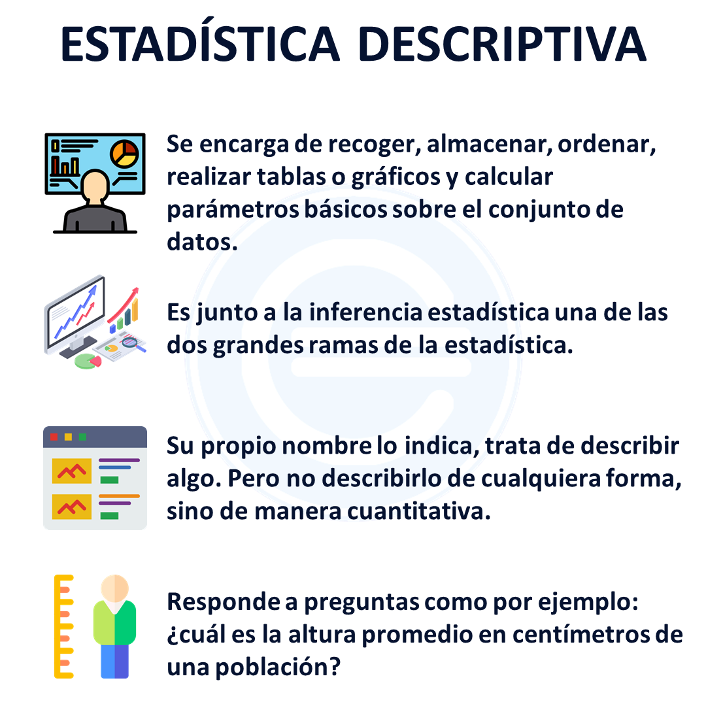
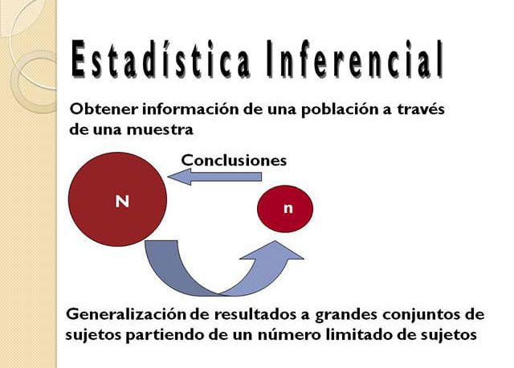

Escribe en tu cuaderno esta definición y los distintos términos que se van a trabajar a continuación:
Se puede entender a la estadística como la ciencia que se encarga de recolectar, organizar, analizar e interpretar datos para obtener conclusiones y tomar decisiones informadas. Utiliza herramientas matemáticas para estudiar información sobre grupos de personas, objetos o situaciones, y ayudar a entender patrones, tendencias o comportamientos.
.La estadística se divide principalmente en dos ramas:
- Estadística descriptiva: Se encarga de recopilar, organizar y presentar los datos de manera clara y sencilla. Utiliza herramientas como tablas, gráficos y medidas (como la media, mediana, moda) para resumir y describir las características de un conjunto de datos.
Si consideramos el peso de una caja de verduras, la altura de una persona o los ingresos de una empresa, la estadística descriptiva nos permite expresar estas características en números. Así, podemos comparar, por ejemplo, el peso de diferentes cajas de tomates utilizando kilogramos o gramos, o determinar si los ingresos de una empresa varían mucho a lo largo del tiempo.

- Estadística inferencial: Se ocupa de hacer predicciones o conclusiones sobre un grupo más grande (población) a partir de una muestra de datos. Utiliza métodos y técnicas para estimar características de la población, probar hipótesis y determinar la confiabilidad de los resultados.
La estadística inferencial se utiliza para: Predecir el comportamiento de una población, Hacer proyecciones, Comparar poblaciones, Analizar tendencias. La estadística inferencial se basa en cálculos probabilísticos, por lo que sus resultados tienen un margen de error.
Por ejemplo, En la medicina, se utiliza para determinar la efectividad de nuevos medicamentos y vacunas. En la industria, ayuda a predecir ventas y comportamientos del mercado

Ambas ramas son fundamentales para el análisis y la interpretación de datos en diversos campos, como la ciencia, la economía, la salud, entre otros.